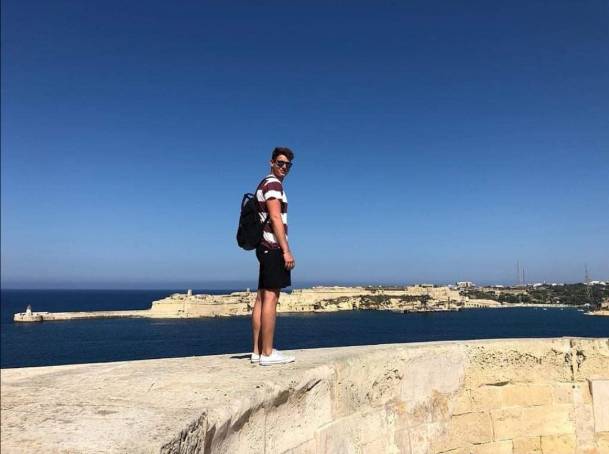

Hello.
A nevem Kovács Zoltán Gábor. Gépészmérnöknek tanulok.
Tanulmányok
Jelenleg a Budapesti Műszaki és Gazdaságtudományi Egyetem hallgatója vagyok. Gimnáziumi tanulmányaimat a Debreceni Ady Endre Gimnáziumban végeztem, emelt angol és német szakon (Debrecen, Magyarország)
2018 és 2020 nyarán is építkezéseken dolgoztam segédmunkásként.
A jövőben épületgépészettel tervezek foglalkozni ezért is szerettem volna a szakma alapjaival megismerkedni.
Továbbá 2019 nyarán a gimnáziumban megszerzett német tudásnak köszönhetően német csoportokat kísértem Debrecenben.
A diplomám megszerzése után, mint fent említettem, épületgépészettel szeretnék foglalkozni.
A jövőben egyre fontosabb lesz az energiagazdálkodás, minden "zöldebb" kell majd, hogy legyen. És szerintem emiatt az átalakulás miatt lesz majd izgalmas, nagy potenciát rejtő, és keresett ez a foglalkozás.
Oldal előzetes terve:
Oldal előzetes design terve:
Eredeti tervek
Eredetileg egy kis bemutató oldalt szerettem volna csinálni magamról, az eddigi munksságomról.
Változások útközben
Miközben készítettem a weboldalt gondoltam kiegészíthetném a jövőbeli tervezett munkásságommal is.
Felmerült nehézségek:
A navigációs sáv elkészíésével meggyűlt a bajom eleinte, de az alább linkelt leírás segítségével végül sikerült úgy megcsinálni ahogy szerettem volna.
Az adott aloldalak elrejtése/megjelenítése is fejtörő volt egy darabig, amikor végül kitaláltam rá egy egyszerű megoldást. A pillanatnyilag kiválasztott elem elrejtésével, és a megnyitandó oldal megjelenítésével.